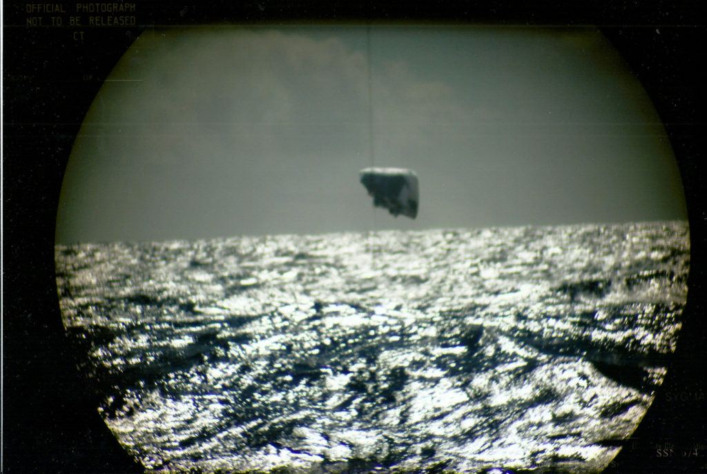
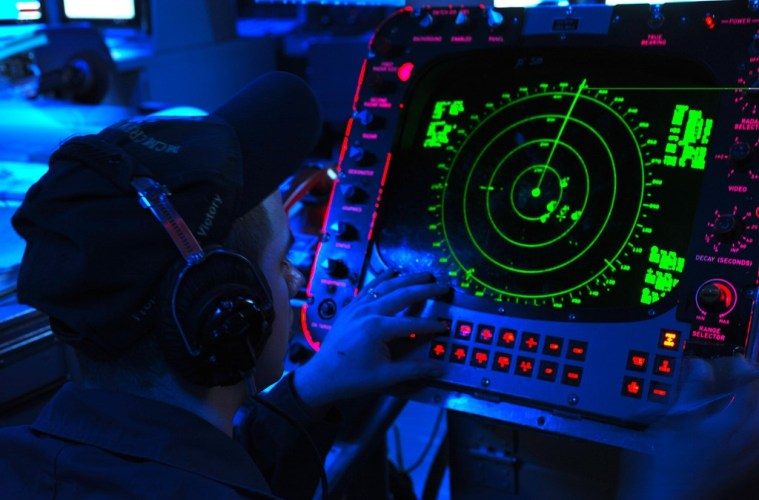

What do you know? Hell finally froze over, well… maybe started to get a little slushy, maybe. I thought it would never happen. But it seems that a slow but cautious opening up of admittance is a start. No, of course they aren’t admitting the active studies, the contacts, the programs, and all that. That is never going to happen. But, at least they are starting to acknowledge that someone or something appears to have some extremely advanced technology. And it is the Pentagon, and not the CIA, that is actively changing the nature of the conversation about it.
Finally, after decades of public denials, and public cover-ups, the Navy finally admits that there are vehicles and objects that possess technologies far, far advanced than what we are capable of having.
I’m sure that there are “officials” that are livid about this.
The sightings of strange activity in the Ann Arbor region of Michigan in March 1966 is perhaps more famous for the rather outlandish, but official explanation issued for it – that the sightings were down to “swamp gas”. It was an explanation that the witnesses would reject outright. As would the vast majority of UFO researchers who examined the case over the decades since. - Michigan, 1966 – The “Swamp Gas” Incidents
The “Tic Tac” incident.
Date: November 14, 2004; Location: Pacific Ocean
Jack Sarfatti writes, The USS Nimitz UFO incident refers to a 2004 Radar-Visual encounter of an unidentified flying object by US fighter pilots of the Nimitz Carrier Strike Group. In December 2017, infrared footage of the encounter was released to the public. Prior to the December 2017 incident, early November 2004, the Ticonderoga-class guided missile cruiser USS Princeton, part of Carrier Strike Group 11, had been tracking mysterious aircraft intermittently for two weeks on an advanced AN/SPY-1B passive radar.
When the same event occurred again around 12:30 EST on 14 November 2004, an operations officer aboard Princeton contacted two airborne US Navy jet fighters from USS Nimitz. The first fighter aircraft was piloted by Commander David Fravor, commanding officer of Strike Fighter Squadron 41, assisted by his weapon systems officer (WSO) in the back seat. Lieutenant commander Jim Slaight was aboard the second jet which was serving in the role as a wingman. The officers were training aboard two FA-18F Super Hornets in a routine combat exercise.

Princeton’s radio operator first asked the AWACS of the Carrier Airborne Early Warning Squadron 117, which was assisting the two F-18s to guide them to intercept the unknown aircraft. Princeton’s radio operator directly instructed the pilots to change their course and investigate and asked if they were carrying operational weapons; they replied that they were not.
The weather conditions for that day showed excellent visibility. When the jet fighters arrived on site, the crew of four saw nothing in the air nor on their radar.
Looking down at the sea, however, they noticed a turbulent oval area of churning water with foam and frothy waves “the size of a Boeing 737 airplane” with a smoother area of lighter color at the center, as if the waves were breaking over something just under the surface.
A few seconds later, they noticed an unusual object hovering with erratic movements 50 feet above the boiling water. Both Fravor and Slaight later described the object as a large bright white Tic Tac 30 to 46 feet (10 to 14 meters) long, with no windshield nor porthole, no wing nor empennage, and no visible engine nor exhaust plume. According to Fravor “I have no idea what I saw. It had no plumes, wings or rotors and outran our F-18s. But I want to fly one”.
![Bigelow, stated, “Internationally, we are the most backward country in the world on this issue,” Mr. Bigelow said in an interview. “Our scientists are scared of being ostracized, and our media is scared of the stigma.” “China and Russia are much more open and work on this with huge organizations within their countries. Smaller countries like Belgium, France, England and South American countries like Chile are more open, too. They are proactive and willing to discuss this topic, rather than being held back by a juvenile taboo.”](../assets/img/surprise-its-not-swamp-gas-the-ufos-are-real-and-the-government-has-fina-e67185/F18.jpg)
Fravor began a circular descent to approach the object, but he claimed the UFO was intentionally avoiding any short-range dogfight radar lock-on with “impossible” maneuvers [not in citation given] that made engagement difficult. As Fravor got closer descending, he reported that the object began ascending along a curved path, maintaining some distance from the F-18, mirroring its trajectory in opposite circles.
Fravor then made a more aggressive maneuver, plunging his fighter to aim below the object, but at this point the UFO accelerated and went out of sight in less than two seconds, leaving the pilots “pretty weirded out”.
Subsequently, the two fighter jets began a new course to the combat air patrol rendezvous point. “Within seconds” the Princeton radioed the jets that the radar spot had reappeared 60 miles away at the CAP point indicating a speed of 2,400 miles an hour to cover the distance in the reported time. The jets went to investigate the new radar location, but “by the time the Super Hornets arrived […] the object had already disappeared.” Both F-18s then returned to Nimitz.
![The aircraft carrier and its strike group also engage in maritime security operations to interdict threats to merchant shipping and prevent the use of the seas for terrorism and piracy. Aircraft carriers also provide unique capabilities for disaster response and humanitarian assistance. The embarked carrier air wing provides helicopters for direct support and C4I assets to support them and ensure aid is routed quickly and safely. The 10 nuclear powered Nimitz class aircraft carriers are the largest warships in the world, each designed for an approximately 50 year service life with one mid-life refueling. USS NIMITZ (CVN 68), USS DWIGHT D. EISENHOWER (CVN 69), USS CARL VINSON (CVN 70), and USS THEODORE ROOSEVELT (CVN 71) have all completed their Refueling Complex Overhauls (RCOH) at Newport News, Va., with USS ABRAHAM LINCOLN (CVN 72) having commenced RCOH in 2013.](../assets/img/surprise-its-not-swamp-gas-the-ufos-are-real-and-the-government-has-fina-e67185/nimitz-class-aircraft-carrier-010-1024x683.jpg)
A second team took off at 15:00 EST, this time equipped with an advanced infrared camera (FLIR pod). This camera recorded an evasive unidentified aerial system on video, publicly released by the Pentagon on 16 December 2017 alongside the revelation of the funding of the Advanced Aviation Threat Identification
This footage is known as the 2004 USS Nimitz FLIR1 video. It officially shed some light on a decade-old story that was largely unknown, except for a 2015 second-hand story on FighterSweep.com that, in spite of providing a lot of details, remained unconfirmed at that time.
![Over a two-week period in late 2004, an unknown, 45-foot long Tic Tac shaped object played cat and mouse with the U.S. Navy off the coast of California. The mighty U.S.S. Nimitz aircraft carrier, and its support ships including the U.S.S. Princeton, carrying the most sophisticated sensor systems in the world, repeatedly detected recurring glimpses of the Tic Tac but were unable to lock on. On Nov.14, F-18s were ordered into the area and saw it up close. Veteran pilot Dave Fravor, commander of the elite Black Aces unit, says the Tic Tac reacted to the presence of the F-18s then took off like a bullet fired from a gun. "It takes off like nothing I've ever seen. One minute it's here, and off, it's gone," said retired Navy pilot David Fravor. In the explosion of media interest that followed the Pentagon's release of the Tic Tac video along with recordings of two other encounters, Commander Fravor expressed the opinion that the technology was far more advanced than anything known on earth.](../assets/img/surprise-its-not-swamp-gas-the-ufos-are-real-and-the-government-has-fina-e67185/UFO_Gimbal_2004_1526683308347_.jpg)
A second infrared footage, known as the GIMBAL video, has been released by the Pentagon alongside the 2004 FLIR1 footage. Although the media often present the two videos together to illustrate the 2004 USS Nimitz UFO incident, the GIMBAL video is unrelated, filmed at the East Coast of the United States at an unknown date.”
Confirmed
The U.S. Navy has confirmed that three F-18 gun-camera videos first released by The New York Times and a UFO research organization show “unidentified aerial phenomena.”.
The term “unidentified aerial phenomena.” or UAPs is a more formal term for UFOs that doesn’t have all that little-green-men baggage.
The Times originally released two of the videos in a December 2017 article. The article revealed that the Pentagon had operated a secret UFO investigatory project, called the Advanced Aerospace Threat Identification Program (AATIP).
All three videos were published on the website of To the Stars Academy of Arts and Sciences, a UFO research organization founded by former Blink-182 singer and guitarist Tom DeLonge.
The news that the Navy considers the three videos, unofficially known as “FLIR1,” “Gimbal” and “GoFast”, first appeared on The Black Vault. The Black Vault is a web site that specializes in declassified government documents.
“FLIR1” is from November 14, 2004, and “Gimbal” and “GoFast” are from January 21, 2015.
![Joe Gradisher, a spokesman for the office of the Deputy Chief of Naval Operations for Information Warfare, said in a statement that the Navy expects to keep the information it gathers private for a number of reasons. “Military aviation safety organizations always retain reporting of hazards to aviation as privileged information in order to preserve the free and honest prioritization and discussion of safety among aircrew,” Gradisher said. “Furthermore, any report generated as a result of these investigations will, by necessity, include classified information on military operations.” “Therefore, no release of information to the general public is expected.”](../assets/img/surprise-its-not-swamp-gas-the-ufos-are-real-and-the-government-has-fina-e67185/9916826463_8d68dc6a37_k-672x372-d866e5e5.jpeg)
Joseph Gradisher, official spokesperson for the deputy chief of naval operations for information warfare, emphasized that these videos represent only some of the many UAP sightings the Navy is investigating.
“Those three videos are just part of a larger effort by the U.S. Navy to try and investigate a series of incursions into our training ranges by phenomena that we’re calling unidentified aerial phenomena,” says Gradisher, who declined to say how many sightings there have been. “Our aviators train as they fight. So when they’re out there training, if there’s an incursion by any kind of aerial vehicle phenomena, whatever, it puts the safety of our aviators at risk as well as the security of our training operations.”
Sample Links
Here are some links related to this subject matter. The United States Navy is openly admitting that they have witnessed, observed and tracked unknown vehicles with amazing behaviors that they cannot understand which defy the known laws of physics.
- US Navy confirms previously released UFO videos show …
- UFO Videos | Navy Says UFO Videos Are Real | Are UFOs Real?
- Navy: No release of UFO information to the general public …
- Multiple Navy pilots spotted UFOs over East Coast: report
- ‘Fleet of UFOs’ Followed US Aircraft, Navy Pilot Says …
- UFOs Invading Military Airspace Multiple Times Per Month …
- Navy pilots speak out on UFO sightings – CNN Video
- Navy UFO Defense Intelligence Research Center
- Groundbreaking UFO Video Just Released By Chilean Navy …
- Navy Pilot Says UFO Was ‘Not From This World’ | Time
- ‘Wow, What Is That?’ Navy Pilots Report Unexplained Flying …
The new Navy position on this matter.
Few stories have garnered more requests for elaboration than the recent news that the Navy has decided to very publicly change its UFO / USO reporting rules and procedures.
Why? People ask?
Everyone has their opinions. As do I. And, yes, there have been wildly varying takes on all of this.
Finally, after decades of public denials, and public cover-ups, the Navy finally admits that there are vehicles and objects that possess technologies far, far advanced than what we are capable of having.

Politico was first to report on the Navy’s new directions for reporting unexplained objects operating in the same environment as its vessels and aircraft.
Politico’s Bryan Bender writes:
"There have been a number of reports of unauthorized and/or unidentified aircraft entering various military-controlled ranges and designated air space in recent years," the Navy said in a statement in response to questions from POLITICO. "For safety and security concerns, the Navy and the [U.S. Air Force] takes these reports very seriously and investigates each and every report." "As part of this effort," it added, "the Navy is updating and formalizing the process by which reports of any such suspected incursions can be made to the cognizant authorities. A new message to the fleet that will detail the steps for reporting is in draft."
To be clear, the Navy isn’t endorsing the idea that its sailors have encountered alien spacecraft. No, that will open up an entire keg of worms. Truthfully, it’s not admitting to anything other than the fact that the Navy has observed and recorded strange objects in the skies and in the waters of the world.
It’s a Duh! moment, for certain.

However, there is an entire army of CIA paid debunkers, and a branch of MAJestic that has been devoted to obscuring, covering up, and ridiculing anyone who even vocalizes that strange objects have materialized and disappeared in and around our planet that defy conventional explanations.
So, in a way, it’s a kind of vindication.
I and others have told our stories about MAJestic and the involvement of the US Navy in it. We have been ridiculed and laughed at, and even though this latest posturing is a long, long way off from the actual reality. It is a start.
It is a start.
For what ever it’s worth; been enough strange aerial sightings by credible and highly trained military personnel that they need to be recorded in the official record and studied. Yes, rather than dismissed as some kooky phenomena from the realm of science-fiction.

The Washington Post did their own follow-up to Politico’s story, stating:
Recently, unidentified aircraft have entered military-designated airspace as often as multiple times per month, Joseph Gradisher, spokesman for office of the deputy chief of naval operations for information warfare, told The Washington Post on Wednesday. Citing safety and security concerns, Gradisher vowed to “investigate each and every report.” He said, “We want to get to the bottom of this. We need to determine who’s doing it, where it’s coming from and what their intent is. We need to try to find ways to prevent it from happening again.”
As if.
But, like I said, it’s a start.
Now, you all have to realize that there is no real way to distinctly classify something like a UFO or USO without the creation of controversy. And controversy in the Navy can be a career limiting move.
Controversy in the Navy can be a career limiting move.
The moment you report something like this, the ONI and MAJestic takes control. Any investigation outside those channels are squelched and suppressed.
Like these links discuss…
- The mysterious FAA recordings.
- Detailed Official Report On Harrowing Encounter Between F/A-18s and UFO Surfaces
- You Need To Hear These FAA Tapes From That Oregon UFO Incident That Sent F-15s Scrambling
- These Are Real Pentagon Reports On Warp Drive, Extra Dimensions, Anti-Gravity, And More
- Learjet And Airbus Had Strange Encounter With Mysterious Craft Over Arizona
- Piper Aircrew Saw Bright Orange Glowing Object During Strange Encounter Over Long Island
This new reality has led to much speculation.
Of course, and as such we can naturally conclude that the military knows far more about these strange happenings than they are willing to let on. It’s not like suddenly out of the blue they started, just now, to observe and record these sightings. Do not be silly.
![The original anonymous source claims that these: 1) The photos were taken from a United State Navy submarine. 2) The location was between Iceland and Jan Mayen island in the Atlantic Ocean. (Jan Mayen belongs to Norway, and is only inhabited by the Norwegian Meteorological Institute and the Norwegian military.) 3) They were taken in March of 1971. 4) The Submarine was the Navy’s USS Trepang (SSN 674) and the Admiral on board was Dean Reynolds Sackett. Obviously, the next step is to try and locate this Admiral Dean Reynolds, if he exists. 5) The Submarine came upon the object by “accident,” as they were in the region on a routine joint military and scientific expedition. Officer John Klika was the one who initially spotted the object with the periscope.](../assets/img/surprise-its-not-swamp-gas-the-ufos-are-real-and-the-government-has-fina-e67185/7-13-2015-1-17-00-PM-731x411.jpg)
Otherwise, why wouldn’t they want to know more about intruders wielding fantastic technology that makes them impervious to existing countermeasures and defenses?
Now all this appears to be changing. Why?
The technology is real
The fact is that we actually know that in the last 15 years, under at least some circumstances, the military has wanted certain high-fidelity data related to encounters with UFOs.
The most compelling encounter of recent, at least that we know of, occurred in and around where the Nimitz Carrier Strike Group was operating during workups to deployment in 2004.

This encounter is known as the “Tic Tac Incident”.
- USS Nimitz UFO incident – Wikipedia
- USS Nimitz: Tic Tac UFO and Mothership USO Incident
- When Top Gun Pilots Tangled With a Baffling Tic-Tac …
- Tic Tac UFO Incidents/ Anthropology of Seances – Shows
- PERSPECTIVES + TIC TAC UFO CASE
- That Time the U.S. Navy Had a Close Encounter With a UFO
- ‘Tic-Tac UFOs’ Are the Start of the ‘War of the Worlds …
- Detailed Official Report On Harrowing Encounter Between F …
The incident, or really the series of incidents as they occurred over a number of days, have become near legendary in nature as the witnesses involved are highly credible in nature and numerous.
In addition, we have official reports detailing the incident that convey a very compelling story, as well as hours of testimony from those who were there—a group of sailors and naval aviators that seems to be emerging more and more out of the shadows with each passing day.

To examine all public evidence available, it becomes clear that [1] someone has some amazing technology, [2] modern technology is recording it all over the world, and [3] it didn’t just start happening…
![The WSO first picked up a contact on the radar around 30nm away while it was operating in the RWS scan mode. He checked the coordinates and it was indeed hovering at their precise CAP point. He attempted several STT locks, to no avail. Later, in the debrief, he explained that he had multiple telltale cues of EA. The target aspect on the track file was turning through 360 degrees along with some other distinct jamming indications. In the less precise scan mode, the return indicated that the object was, in the WSO’s words, “A few thousand feet below us. Around 15-20K– but hovering stationary.” The only movement was generated by the closure of the fighter to the CAP location.](../assets/img/surprise-its-not-swamp-gas-the-ufos-are-real-and-the-government-has-fina-e67185/6ace78af56fe1c334e4b34e5f32299b2_L.jpg)
And since it didn’t just start happening, then the Navy knows more about all this than they will ever admit. The classification is MAJestic.

No matter how you look at it, the “Tic Tac” incident that involved the Nimitz Carrier Strike Group off the Baja Peninsula in 2004, implies some pretty mind blowing conclusions.
Our reality is wrong.
The main revelation is that technology exists that is capable of performing flying maneuvers that shatter our perceptions of … well, everything.
Everything.
![It's quite possible that by the time the FLIR saw the object, it was closer than 30 nmi. The above account also says that the object was "hovering at their precise CAP point," which corroborates Princeton's radar contact, and suggests that this was not an ordinary civilian jet. But the account also says that the F-18's radar indicated that the object was hovering below them and that the FLIR was slaved to the radar, yet the FLIR footage shows the object moving to the left above them, assuming that TTSA's video annotation is correct when it says "Sensor aimed 6° above aircraft axis."](../assets/img/surprise-its-not-swamp-gas-the-ufos-are-real-and-the-government-has-fina-e67185/Metabunk-2018-07-04-12-49-59-1024x544.jpg)
This includes propulsion, flight controls, material science, and our basic ideas of physics. So many things that we thought were so fixed, unchangeable and fundamental to our universe are just wrong.

Let me underline this again for you, the Nimitz encounter with the Tic Tac proved that exotic technology that is widely thought of as the domain of science fiction actually exists.
It is real.
![The WSO first picked up a contact on the radar around 30nm away while it was operating in the RWS scan mode. He checked the coordinates and it was indeed hovering at their precise CAP point. He attempted several STT locks, to no avail. Later, in the debrief, he explained that he had multiple telltale cues of EA. The target aspect on the track file was turning through 360 degrees along with some other distinct jamming indications. In the less precise scan mode, the return indicated that the object was, in the WSO’s words, “A few thousand feet below us. Around 15-20K– but hovering stationary.” The only movement was generated by the closure of the fighter to the CAP location. The WSO resorted to the FLIR pod on board, slaving it to the weak track the RWS mode had been able to generate.](../assets/img/surprise-its-not-swamp-gas-the-ufos-are-real-and-the-government-has-fina-e67185/d787e48186df769035576361a5eacbb5.jpg)
It isn’t the result of altered perception, someone’s lucid dream, a stray weather balloon, or swamp gas.
There has been speculation as to where Allen Hynek, scientific consultant for Project Blue Book, came up with the possible explanation of swamp or marsh gas as to what was seen on successive nights in Dexter and Hillsdale, Michigan, (March 20, 21, 1966).
Some reports suggest Hynek got the idea from a University of Michigan botany professor or that Hynek became informed about the phenomenon through reading. However, in my research for an article titled "Swamp Gas Revisited", published in the February, 2004, issue of UFO Magazine (UK), a much different explanation was revealed to me.
In interviewing Washtenaw County Sheriff Doug Harvey for the article, the former Sheriff explained how he had taken Hynek to the Frank Mannor farm near Dexter for some on site investigation. The sheriff described how Hynek interviewed witnesses and sloshed around in the swamp for a time in an attempt to determine what the many witnesses had seen a few nights earlier. The Sheriff then brought Hynek back to the Sheriff's headquarters located in Ann Arbor.
According to Harvey, they talked for a time about the sighting and Hynek admitted he didn't know what the witnesses had seen on the Mannor farm. "That's when the phone call came in," Harvey told me.
"What phone call I asked?"
Harvey said, "it was a call for Hynek and it was from Washington."
"How did you know it was from Washington," I replied.
"Because the dispatcher stepped into the office and said, 'Dr. Hynek, you've got a call from Washington.'"
Harvey told me that Hynek stepped out of the office to take the call and then returned in a few minutes looking a bit perplexed. And then, according to the sheriff, Hynek said, "it's swamp gas they saw, swamp gas."
It was a short time later that Hynek held the infamous press conference at the Detroit Press Club and suggested that a possible explanation for the recent sightings might have been marsh or swamp gas. The explanation became a front page story the next day in papers across the country and Hynek became the butt of jokes and cartoons. He was ridiculed to such an extent that Michigan Congressman Gerald Ford (later President Ford) asked for a Congressional investigation. It was one of Hynek's worst moments.
The important thing here is that if the Washington phone call actually took place, and I believe it did, then Hynek was receiving direction from a high government source. The whole thing smells of more UFO governmental coverup.
- The origin of Dr. Hynek's "Swamp Gas" explanation
Someone or something has crossed the technological Rubicon and has obtained what some would call the Holy Grail of aerospace engineering. And now the Navy is throwing up it’s hands, and letting the rest of the world (a little bit) in on it’s big secret…
…it’s not swamp gas.

This reality is very hard to process for many.
There is always an out for some in the form of claiming an odd impromptu conspiracy. Or alternatively, some hollow explanation that doesn’t pass muster beyond the first paragraph. Yet, seriously, in the end, it actually happened.
Some people are so caught up in their belief system that they are unable to reason at any sort of cognitive level. Consider the skeptics... A UFO can land on network television, within a football stadium with hundreds of onlookers. The hatch can open up, and everyone in the stadium, and all the news-media would record the event on their cameras. An extraterrestrial can get out, bow to the camera, and dance a tango with the star quarterback. All the skeptics would report would be that swamp gas affected a nation-wide bout of insanity.
As uncomfortable as that fact is, it’s reality.
![It was simply hanging in midair. He [the WSO] switched to the TV mode and was able to again lock the FLIR onto the object while still trying, with no luck, to get a STT track on the radar. As he watched it, the AAV moved out of his screen to the left so suddenly it almost seemed to disappear. On the tape, when it is slowed down, the object accelerates out of the field of view with shocking speed. The WSO was not able to reacquire the AAV either in RWS or with the FLIR.](../assets/img/surprise-its-not-swamp-gas-the-ufos-are-real-and-the-government-has-fina-e67185/navy-tic-tac-observed-1024x577.jpg)
So, we need to use this event as a precious insight going forward when it comes to evaluating and contemplating what is possible and where truth actually lies.
Because, I’ll tell you what, the general public hasn’t a clue.

Perfect location for observation.
What many may not know about this event is that it occurred in a place and time where the most powerful set of aerial surveillance sensors ever created were amassed together and were watching and recording it all.
This entire encounter was not captured on a cell phone. It was captured with an array of the most advanced electronic and sensing equipment known to man.
And it is the recording part that is maybe the most interesting facet of the Nimitz encounters that has largely been passed over in terms of significance and notoriety.
Ideal test conditions.
What most don’t realize is that the Nimitz Carrier Strike Group wasn’t just equipped with some of the most advanced sensors the world had to offer, but that it also had hands-down the most advanced networking and computer processing capability of any such system.

Dubbed Cooperative Engagement Capability (CEC), this integrated air defense system architecture was just being fielded on a Strike Group level for the first time aboard Nimitz and the rest of its flotilla.
At its very basic level, it uses the Strike Group's diverse and powerful surveillance sensors, including the SPY-1 radars on Aegis Combat System-equipped cruisers and destroyers, as well as the E-2C Hawkeye's radar picture from on high, and fuses that information into a common 'picture' via data-links and advanced computer processing. This, in turn, provides very high fidelity 'tracks' of targets thanks to telemetry from various sensors operating at different bands and looking at the same target from different aspects and at different ranges. Whereas a stealthy aircraft or one employing electronic warfare may start to disappear on a cruiser's radar as it is viewing the aircraft from the surface of the Earth and from one angle, it may still be very solid on the E-2 Hawkeye's radar that is orbiting at 25,000 feet and a hundred miles away from the cruiser. With CEC, the target will remain steady on both platform's CEC enabled screens as they are seeing fused data from both sources and likely many others as well.
This is a amazing “quantum leap” in sensing capability and data fidelity that provides information (and all associated data imagining fidelity) at an amazing degree of detail.

The data-link connectivity and the quality of the enhanced telemetry means that weapons platforms, such as ships and aircraft, could also fire on targets without needing to use their own sensor data.
For instance, a cruiser could fire a missile at a low-flying aircraft that is being tracked by a Hawkeye and an F/A-18 even though it doesn’t show up on their own scopes.
This capability continues to evolve and mature today and will be the linchpin of any peer-state naval battle of the future that the U.S. is involved with.
Now, to keep things in mind, you must take note that back in 2004, it was new and untested. At least on the scale presented by the Nimitz Carrier Strike Group as it churned through the warning areas off the Baja Coast.
The key takeaway here is that if ever there was an opportune time to capture the very best real-world sensor data on a UFO, it was then. At that place. At that time. Under those circumstances. Thus, it did capture data and sensor readings off the scale. It observed and recorded a high-performance target in near lab-like controlled settings offered by the restricted airspace off the Baja Coast, this was it.
Thus, by intention or chance, this is exactly what happened.
Someone within the DoD was very interested
By multiple accounts from vetted first-hand sources, the hard drives that record CEC data from the E-2C Hawkeye and Aegis-equipped ships were seized ( some may say “in a very mysterious fashion”) following the Tic Tac incident.
MAJestic has full authority over extraterrestrial events. So there is really nothing mysterious about it at all.

Uniformed U.S. Air Force officers showed up on these vessels and confiscated the devices and they were never to be seen again. Which is a normal, programmed and standard operating procedure for these events. MAJestic takes over.

This is not rumor or hearsay, this is attested to by multiple uniformed witnesses that were on the vessels that made up the Nimitz Carrier Strike Group at the time. Hundreds of people observed the “Tic Tac” UFO. And hundreds of people watched the information being suppressed right before their very eyes.

At the same time, on an official level, the Navy seemed to shut down any further investigation into the incident. The aforementioned after-action report states that the Nimitz Carrier Strike Group’s senior intelligence officer, whose name is redacted, alerted the Navy’s 3rd Fleet intelligence officer, or N2, about the incident via secure Email. That same Email, known as a Mission Report (MISREP), included the video footage and other details.
For unexplained reasons, officials at the 3rd Fleet N2 declined to send this report up the chain of command. It went straight from the Senior Intelligence Officer (N2) direct to MAJestic.
The reason might be unexplained to the layman, but all issues of an extraterrestrial nature alerts MAJestic and then everything falls under the MAJIC classification.
They also deleted the MISREP ( Mission Report ), but speculated that paper copy should have been available. However, there is no indication that anyone went looking for this physical copy of the MISREP during the investigation.

As such there is no official indication that an investigation into the events that week ever occurred.
According to hundreds of witnesses, we do know someone within the military had a very high interest in what went on. As such, after the N2 alert, they wanted the high-fidelity radar data collected from the Strike Group.
That night in the berthing I asked a very close friend in intel if he could confirm the legitimacy of the film. Without speaking, he gestured that it was correct. So, my skepticism began to fade and that next day a group of individuals were "cod'ed" onto the carrier and they retrieved all the tapes. I can confirm they cod'ed onto the ship, but the seizure of tapes came from people that work in those shops. - https://www.reddit.com/r/UFOs/comme...re_while_on_board_an/?st=JBGR1RZM&sh=51769c5f
Not deleted, seized, potentially for exploitation.
So yeah, someone was highly interested in this event within the DoD. Whether that was because it was of an unexplained nature or part of a test of a very capable secret aerospace program, remains unclear.
What is so interesting
Luis Elizondo, the former DoD intelligence officer who headed up the Pentagon’s Advanced Aerospace Threat Identification Program (AATIP) until 2012, is now an investigator with Tom DeLonge’s ‘To The Stars Academy’ and is featured on HISTORY’s new television program (ie: the History Channel), “Unidentified: Inside America’s UFO Investigation”.
It was Elizondo and the ‘To The Stars Academy’ that were integral in bringing to the public the ‘Tic Tac’ UFO Navy cockpit video from 2004, with USS Nimitz-based pilots’ comments that included, “Holy sh*t, what is that?”, and “It’s white. It has no wings. It has no rotors,” and “It didn’t fly like an aircraft. It was so unpredictable.”
When Elizondo ran the DoD’s AATIP, he compiled a list of extraordinary, logic-defying capabilities most commonly associated with unidentified aerial phenomena sightings. Here are Elizondo’s “five observables”:
- Anti-gravity lift – UAPs (Unidentified Ariel Phenomenon) have no visible means of propulsion and lack flight surfaces such as wings – thus the tubular, ‘Tic Tac’ description. They thus fly and operate using systems that do not rely on air, pressure, lift forces, and other qualities that conventional propulsion utilize.
- Sudden and instantaneous acceleration – UAPs will accelerate or change direction so quickly that no human pilot could survive the g-forces. This implies [1] non-human operation, [2] robotic or automated operation, or [3] inertial suppression abilities.
- Hypersonic velocities without signatures – Aircraft traveling faster than the speed of sound will typically leave a “signature” like vapor trails and sonic booms. UAPs don’t. They are a closed-loop system, where all conventional vehicles are open-loop systems.
- Low observability or cloaking – Witnesses to a UAP will usually only see a glow or haze around them.
- Trans-medium travel – UAPs have been seen moving in and between different environments, such as space, the earth’s atmosphere and even water. USS Princeton radar operator Gary Vorhees later confirmed from a Navy sonar operator in the area that day that a craft was moving faster than 70 knots underwater, roughly two times the speed of nuclear subs.
UAPs’ origins are still officially unknown. Are they a super-top-secret U.S. defense project? Do they hail from Russia? China? Or from even further afield? The only thing we do know is that their capabilities exceed any technologies currently in the U.S. arsenal.
Could it be ours?
The latter possibility is also very hard for people to come to terms with—that this capability could belong to the U.S. military.
There is no better place to test such a system than against the Nimitz Carrier Strike Group with its CEC abilities during its workup off the Baja Coast.
It is not an operational environment.
According to the report (turn to page 6), a Lt. Col. was doing a Function Test Flight (a test to see if the plane was fully functional after being repaired) when he was asked to go check out an "unidentified airborne contact," along with two other pilots. He was asked if he had any ordnance (weapons) on board, to which he replied no. Officials say this was a strange question; no air controller had ever asked him that when dealing with an unknown contact situation. Soon after, he came close to the coordinates of the unknown object and was told to "skip it" and head back by the controller. Instead, the Lt. Col. decided to go check it out. What he found was a "disturbance" in the water between 50 and 100 meters in diameter that was close to a round shape. It created a large area of frothing white water, and reminded the pilot of "something rapidly submerging from the surface like a submarine or a ship sinking." Soon after, he looked toward the area again and found no trace of the disturbance or any craft near the spot. According to the report, the disturbance may have been caused by an AAV that was 'cloaked' or 'invisible to the human eye.' -Outerplaces
Aircraft are not armed and nobody is expecting a fight.
It is high-level integrated training with crews that have sharpened skills as they prepare for a cruise in which they could very well be called upon to fight for their country.
Those warning areas and range complexes that extend out and down from the Channel Islands off the SoCal coast are among the best space the U.S. military has for training and testing advanced hardware and tactics in a secure and sanitized environment.
In other words, it was an ideal testing environment that featured the very best aerial, surface, and undersea surveillance sensors and sensor crews on the planet.
Black research budget
Maybe these are super-secret new technology on evaluation trials, instead of ET trying to buzz our military.
What then?
The fact is that the U.S. government has poured tens of billions of dollars each year into the black budget. It has done so for the better part of a century. Maybe, the argument goes, they developed some amazing technologies that appear to be extraterrestrial in origin. We consider them extraterrestrial as they are so advanced that we cannot possibly associate them with “home grown” technology.
The idea here is that somewhere along the way they got lucky. The argument goes that they made major breakthroughs in highly exotic technologies. And these technologies are so outrageous that difficult to understand that we simply associate them as “impossible” or “from another world”.
"There are some new programs, and there are certain things, some of them 20 or 30 years old, that are still breakthroughs and appropriate to keep quiet about [because] other people don’t have them yet." -Ben Rich
There’s some reason to follow this train of thought. This argument mirrors some cryptic statements in the industry. These were made by top players in the “dark areas” of aerospace development.
Like, for instance, the late Ben Rich.
"Anything you can imagine we already know how to do...." -Ben Rich
Clearly, the ability to defy the limits of traditional propulsion and lift-borne flight would be the pinnacle of aerospace and electrical engineering. It would define new rules. New laws to abide by, and a host of new procedures and disciplines from design, to physical laws, to manufacturing.
"The U. S. Air Force has just given us a contract to take E. T. back home." -Ben Rich
Because of this, it would be far too sensitive to disclose, at least in some people’s eyes within the national security establishment. Though, and I do mean this, how are you going to field the new technology without observation? Eh?
"We also know how to travel to the stars." -Ben Rich
But forget fielding. Let’s get down to “brass tacks”. How about testing. For long, long before anything can be put on the “field”, it needs to be developed, prototyped, and tested. First in sub-assemblies, and then in pilot models.
Indeed, even the risk of testing this technology against known air defense capabilities would have to be weighed against the need for the tightest of secrecy.
"Anything you can imagine we already know how to do." -Ben Rich
But, of course, the CIA, MAJestic and all the rest have done a real “smash up” job on the idea of extraterrestrial life. It is just about impossible for anyone, contemporaneously, to come forth and say that UFO’s exist. They risk a serious backlash from the programmed mindless masses.

This is very true, since UFOs carry such a stigma and have deep pop culture roots in our society, the risk of doing so against an unknowing Carrier Strike Group operating under tight training restrictions seems small and the setting uniquely ideal.
Seems so.
"If you've seen it in Star Trek or Star Wars, we've been there and done that." -Ben Rich
In other words, could the Tic Tac have been ours?
"We have things in the Nevada desert that are alien to your way of thinking far beyond anything you see on Star Trek." -Ben Rich
Yes. It could have been.
Could have.
But…
Listen up.
If this entire sequence is a result of a “black budget” testing of new technologies, then I will need to point out a few points…
- It would be tested at NWS China Lake.
- Field trials are a late testing development.
- The N2 would be aware of the testing beforehand and briefed.
- The crews and officers would be briefed on the testing.
- The retrieval of the sensor data would have been handled differently.
We know that whoever that craft belonged to, the information the flotilla collected on it was of great importance to some entity within the DoD.
Naval Air Weapons Station China Lake is a large military installation whose mission is to support the research, testing and evaluation programs of the U.S. Navy. It is part of Navy Region Southwest under Commander, Navy Installations Command. The installation is located in the Western Mojave Desert region of California, approximately 150 miles north of Los Angeles. - Naval Air Weapons Station China Lake - Wikipedia
And the fact that just the radar data was seized makes sense in that the extent of the Nimitz Carrier Strike Group radar network could not be replicated over land during small-scale testing, or via a chance encounters with military aircraft.
With all this in mind, the idea that the Navy is supposedly just now interested in what its aviators and sailors see when it comes to unexplained craft peculiar and nebulous, to say the least.
One can’t help but feel there are two realities at play within America’s defense apparatus—one that sits on or very near the surface and one that resides deep below it.
Thus…
- MAJestic has been working with highly advanced extraterrestrial technology for decades, and operates in the deep black.
- NWS China Lake has coordinated advanced development programs via MAJestic.
Whether extraterrestrial-related, or home-grown, an event (known as the “tic toc event” occurred) and was observed. For certain China Lake, and MAJestic were both involved.
Whether extraterrestrial in origin, or “home grown” is all up to speculation.
Controlled release of the visible portion of technology without disclosure of achievement milestones.
So why the release now?
Why is the DoD admitting to the observation and study of vehicles that are clearly not of conventional human design? Why now? Why in this venue and in this manner?
If the DoD truly has no idea of what these things are, then it seems absurd that it is just now curious about them. Now, for goodness sakes. After the better part of a century of sightings and major encounters, and denials.
"UFO's are just the imaginings of simpletons. There are no extraterrestrials. The government would tell us."
In fact, we know that isn’t the case historically.
Publicly, the government and the military, has had varying degrees of documented interest in the topic over the years. This includes funded studies, and research. For instance, there is the Advanced Aerospace Threat Identification Program (better known as AATIP), and many others.
One could posit the idea that a government-manufactured (or at least encouraged) information conduit of sorts, is behind this latest admittance by the US Navy.
"It's clearly swamp gas. There is no other reasonable explanation."
This entire arrangement sounds… well… Squirrely.
This, folks, is where the rabbit hole of information and disinformation opens up below us. There is no way around it. We accept it as it is, or we plunge into the abyss. There are no alternatives.
There is the enormous vacuum of verifiable information that the government has created on the matter. That is intentional, and has been in place since the late 1940’s.
Yes. That long.
Now with all the rumor and speculation, one’s truth compass begins to spin crazily, as you dig into these issues.
- UFO’s are UAP’s.
- The idea that extraterrestrial life exists is still considered outlandish.
- There is a black budget, but the technologies developed will never be observed by the common man.
- There might be the remote possibility of others having technologies and vehicles that are superior to what we field in our military.
It is not only about what is real and what is not real. It is fundamentally about what does the government want us to believe and not to believe.
In other words, even if the government wants the truth to come out eventually, it seems alarmingly clear they are going to do it on their own terms, and the timeline for that plan could be measured in decades, not years, or more.
Reasons for the switch in direction.
There is a very real reason why the Pentagon would want the idea of UFOs injected back into the public’s consciousness and to add validity to it.
They literally spread disinformation to the public in order to create a wonderfully convenient cover for the myriad clandestine weapon systems in development or operational at the time.
Doing so is in itself a very old chapter in Uncle Sam’s information warfare playbook.
During the Cold War, the government actively lied about UFOs and perpetuated UFO hysteria to cover up its secret aircraft programs.
They literally spread disinformation to the public in order to create a wonderfully convenient cover for the myriad clandestine weapon systems in development or operational at the time.
Now, we are once again back in an age of “great power competition,” according to the Pentagon, and billions of dollars are being pumped into new technologies that were considered exotic themselves just years ago.

With this in mind, reanimating maybe the best and most broadly self-perpetuating cover story of all time for sightings of clandestine aircraft that people see in the sky seems like a highly logical and proven act.
They literally spread disinformation to the public in order to create a wonderfully convenient cover for the myriad clandestine weapon systems in development or operational at the time.
Reinvigorating the presence of UFOs in the American psyche by adding heaps of validity to the topic on an official level and possibly also on a less than official level (To The Stars Academy for instance) can help keep secret programs that grace the skies just that, secret.
And who knows, that list of programs and technologies could include the very Tic Tac and other bizarrely shaped craft that can defy imagination with their aerial feats that have been spotted and even recorded in recent years.
Conclusion
If the Pentagon really doesn’t know what these things are, then I am a sweet potato. Of course they do. The issue isn’t at all about the situational facts, but how the information can be manipulated for advantage.
If the DoD doesn’t know where they come from, after so many years of sightings and odd encounters and its own studies and shadowy probes, then that would be an unfathomable dereliction of duty.
Certainly, considering they are, after all, tasked with keeping America safe from the foreign harm.
But really, how can we believe the idea that the military has zero opinion on the matter?
It seems like a laughable proposition at best. If there is anything they would have high interest in, it would be craft capable of decimating the enemy on a whim.
With all that being said, what does the Navy’s move to change its procedures and rules in regards to reporting UFOs mean?
It means nothing.
So don’t get your collective hopes up.
MAJestic Related Posts – Training
These are posts and articles that revolve around how I was recruited for MAJestic and my training. Also discussed is the nature of secret programs. I really do not know why the organization was kept so secret. It really wasn’t because of any kind of military concern, and the technologies were way too involved for any kind of information transfer. The only conclusion that I can come to is that we were obligated to maintain secrecy at the behalf of our extraterrestrial benefactors.


MAJestic Related Posts – Our Universe
These particular posts are concerned about the universe that we are all part of. Being entangled as I was, and involved in the crazy things that I was, I was given some insight. This insight wasn’t anything super special. Rather it offered me perception along with advantage. Here, I try to impart some of that knowledge through discussion.
Enjoy.


Utilizing Intention


Influencer Questions
Here are posts that have gathered a series of questions from various influencers. They are interesting in many ways and could help all of us unravel the mysteries of the lives that we live.


MAJestic Related Posts – World-Line Travel
These posts are related to “reality slides”. Other more common terms are “world-line travel”, or the MWI. What people fail to grasp is that when a person has the ability to slide into a different reality (pass into a different world-line), they are able to “touch” Heaven to some extent. Here are posts that cover this topic.


John Titor Related Posts
Another person, collectively known by the identity of “John Titor” claimed to utilize world-line (MWI egress) travel to collect artifacts from the past. He is an interesting subject to discuss. Here we have multiple posts in this regard.
They are;